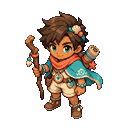
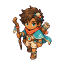
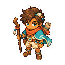
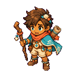
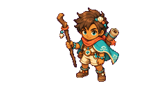

IDLEPASS

平均高度108 px
偏差0.00%
越界0
海岛侦察员角色 · Idle / Walk / Attack / Hurt · 固定格动作包




原横向长突刺会跨出当前固定单元格。最终 ATTACK 改为紧凑近身下劈后通过验收。
如必须保留长突刺：扩大攻击格，或定义独立的攻击导出规格。
以已通过的 IDLE 作为身份基准后，四组最终动作能够同时满足角色识别、尺寸容差、脚底对齐与透明切帧要求。
